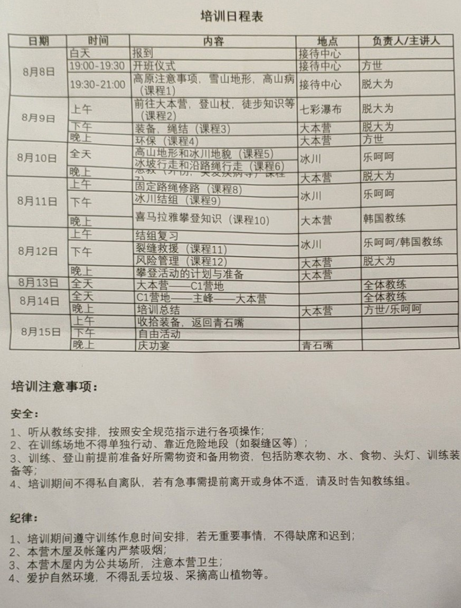
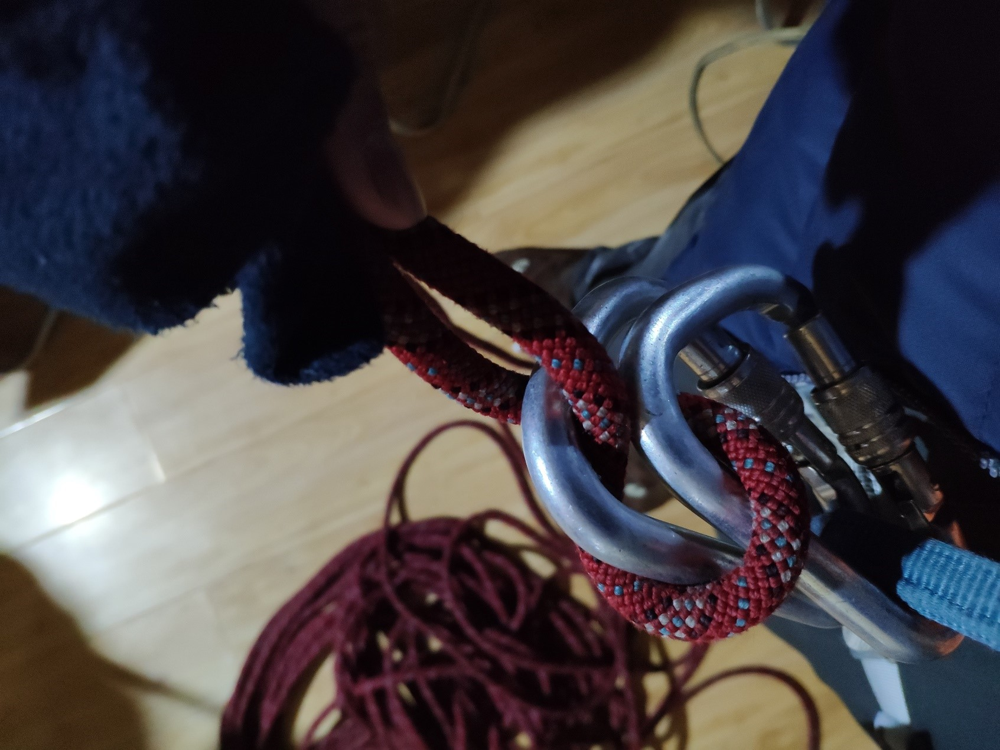
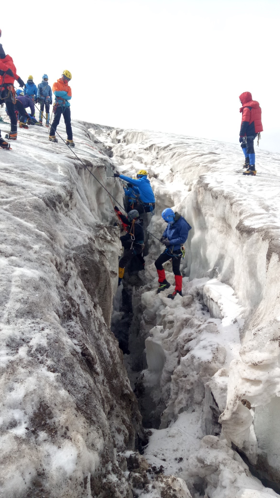
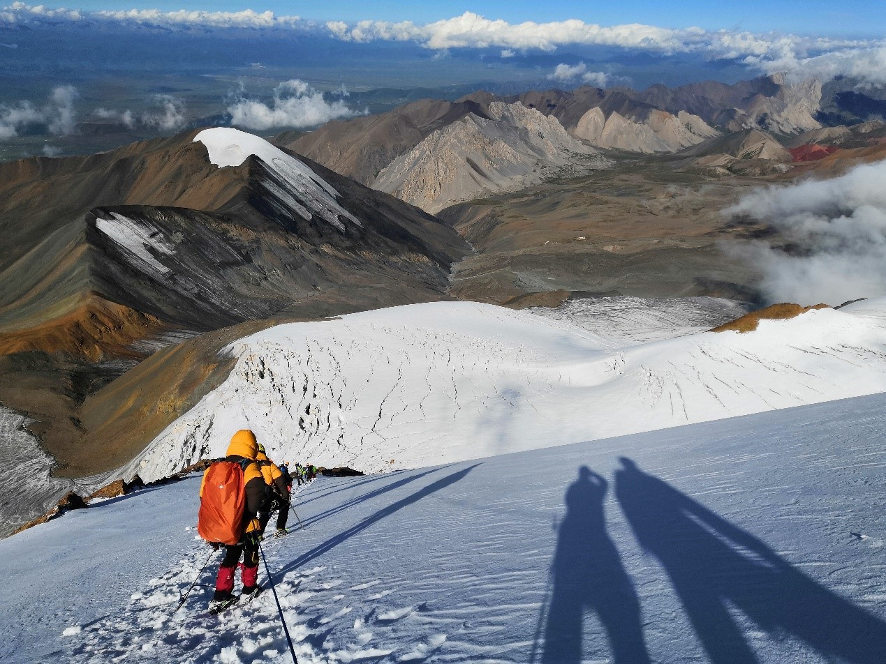
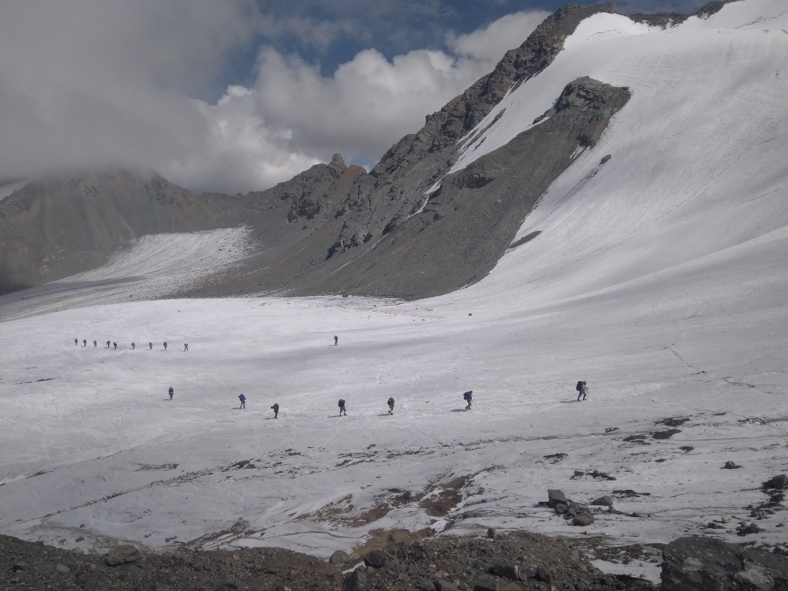

发信人: Rox (R9), 信区: outdoor
标 题: 岗什卡雪山培训_LBR
发信站: 饮水思源 (2018年09月05日15:07:00 星期三)
首先这个排版嘛，推荐大家看PDF:
https://pan.baidu.com/s/1ojy5mT9LHbwvVVIkzNVLPg
##############################################################################
岗什卡雪山培训总结
李宾锐
1 线路概况
时间：2018.8.8-2018.8.15 参加人员：李宾锐&陈韵佳
地点：青海省海北藏族自治州门源回族自治县青石嘴镇，岗什卡雪峰5254.5米
从大本营到C1：
海拔上升：4258米->5184米，累计爬升926米，累计下降0米。行走用时6:21:56，共计3.8
5km，总用时两天，第一天早上出发，中午到达C1，下午教学修整，第二天5:00出发，8:1
5到顶，9:00开始下降，11:40撤回C1，修整拔营，13:30左右到达BC。
2 教学计划&实际每日时间表
教学计划：
 screen.width - 200){this.width = screen.width - 200}">
实际用时：
Day 1
6:40 起床
7:00 早饭
8:00 教学
9:00 出发
10:00 到达冰川末端
14:00 天气有变，冰雹混雨，返回大本营
14:40 我回到到营地
15:40 cyj回到营地
16:10 总结&上课
Day 2
8:00 出发去冰川
9:00 训练上升下降，建站，冰坡行走
13:00 返回大本营
15:00 上课
Day 3
7:30 出发去冰川
8:30 训练裂缝救援
13:00 返回大本营
15:00 上课
Day 4
8:00 出发前往c1
11:30 中间有结组教学，抵达c1扎营
15:00 修路教学
16:30 变天回营
Day 5
3:30 起床
5:00 出发冲顶
8:15 到达峰顶
9:00 开始下撤
11:00 到达c1
13:00 到达bc
3 每日杂感
Day1：
今天上午起床选择穿的衣服上的时候太过纠结，由于没有打底的速干，再三犹豫了下要不
要穿抓绒打底，最后考虑到训练会有大多数时间是运动量不大的，还是穿了。所以最后的
衣着是上半身短袖速干+薄羽绒+软壳，下半身打底抓绒+不太透气的冲锋裤。最后的感受是
上午走的时候较热微汗，但可以忍受，训练时不动晒着太阳感觉刚好，但回营地感觉腿部
比较潮湿，不太舒适。但决定继续该套着装，因为确保登山时的舒适比营地重要。
新买的雪套没有穿高山靴试过，费时太多。
训练内容为步伐和过节点，经过复习以后协助布绳，相较于协会的教学，在牛尾长短绳的
用途上有不同意见，牛尾捆绑和长短需求不同，冰川末端用于教学的冰坡较长，且在高海
拔地区，对于体能有一定锻炼；对于修路和下撤有补充（协会内容不全），之后的修路课
程上过后再系统总结。
训练结束后返回大本营时，从冰川末端到大本营为乱石路，乱石较为松动，走起来很费劲
，没有足够经验且体能已消耗较多时走起来非常绝望。这一点在冲顶之后返回时可能会非
常麻烦。
关于盘绳的手法，单绳有补充一种在手上绕的方式，双剩收发补充了两点细节，一个是标
志中点，另一个是最后可以不穿。补充了意大利半扣的用法作为考核项，因为登山时可能
会格外有用。
学习了户外急救的判断流程，有时间后详细补充。
另外补充一点，高海拔线路睡觉最好不要太早，非睡眠时段感到非常困倦时更要尽量保持
清醒。
高反情况：静态心率61，静态几乎没有感觉，剧烈运动后头昏较喘。cyj高反较我严重，一
直有持续性头疼。
Day2&Day3：
着装上羽绒由于容易被汗蒸汽打湿，然后保暖性严重下降，所以改为速干+抓绒+冲锋衣，
下装单一条带绒冲锋裤，背包携带一厚羽绒，比之前更为合适。并且发现在我的这种搭配
下，抓绒的保暖性能其实是优于轻羽绒的。
裂缝救援课程由韩国老师给我们讲的，学习了一个朴式普鲁士抓结打法。裂缝救援学习了
骡子结，一个奇怪的双锁意大利半扣变种（可以代替上升器），复习了1/3上升系统，双抓
结单绳上升，斜坡上的救援技术，垂直冰裂缝主要讲了自救的方法。复习了结组的头尾盘
绳。
 screen.width - 200){this.width = screen.width - 200}">
意大利半扣变种
 screen.width - 200){this.width = screen.width - 200}">
裂缝救援教学
复习了风险评估流程。
高反情况：头晕早起之后有些许复发，但几乎不影响正常的活动。
Day4&Day5：
首先是路线说明，从bc到c1，先是一段1小时的碎石路段，碎石均由山体滑坡和冰川推移所
致，较为松动，如果没有经验，行走较为困难。碎石路段走完之后到达换鞋处，然后是冰
岩混合路段，然后是冰川路段，坡度在30度左右。这里有一点需要注意，和我们协会之前
的认知不同，冰爪应该是能够通行冰岩混合路段的，比起爱惜冰爪，更应该做的是相信装
备。另外一点需要注意的是，实际上通行的路段是以冰川为主，而积雪较少，这样的路段
，即使滑坠之后，结组的制动效果也不好，甚至会一起掉落。另外有一点，就是我们携带
的是技术镐，在实际行走过程中，比行走高不方便很多。以及我携带的利齿冰爪，在雪坡
上也没有平齿的好用，使用的通用安全带，没有登山专用的安全带，轻便方便。综上，我
想表达的是，使用攀冰装备进行雪山攀登，实际上是不合适的。从c1营地到顶峰，先会爬
一个长一百米45度左右的雪坡，然后行进一公里左右的冰川路段，该段冰川路段冰裂缝密
集，最后冲一个长度600米，坡度在45度到60度左右的一个雪坡。
 screen.width - 200){this.width = screen.width - 200}">
冲顶前的雪坡
这一段路前后的两个雪坡，均采用修路的方式，沿路绳推上升器上升，结组通过中间的冰
川路段。这里有一点需要注意，当修路的人与结组的人并不是同一人的时候，一定要准确
确认使用的路绳是哪一条，这一点尤为重要，因为可能有用来先锋保护的动力绳，或者之
前弃用的路绳干扰判断，一旦用错，后果严重。另一点需要注意的是，在原则上，每一段
路绳应该只有一人能够上升。但实际在中外的攀登过程中，这一点都非常难以得到保证。
这带来了一个风险就是一个冰锥的承力只有九百千克左右，而如果所有人都用路绳借力攀
登的话，那它的力量应该接近能够承受的理论极限，非常危险，所以这个时候路绳只能用
来保护，而不能用作上升的动力来源。一点需要注意的是，上升器在使用过程中，因为不
能承受冲坠，不能够低于腰的高度，而我在攀爬的过程中，实际上会感觉到推上升器耗费
了我大量的体力。在结组通过冰裂缝的过程中，一定要注意跟着前一人的脚印行走，不能
够自己开辟新路线。在最后下降的过程中，为了提高下撤的效率，在下撤的过程中中基本
不使用atc下降。而采用挂锁，然后用手抓绳的方式下降。我在其中一段较陡路段尝试过使
用atc下降，而实际上这一段下降速度缓慢，且推绳用了我大量的体力，在下降过程中，有
一段路需要跨过一个较大的冰裂缝，在这一段我采用倒攀的技术，且踏落了中间一块空的
雪块，避免了之后队员在通过过程中不小心踩踏该雪块，坠落冰裂缝的风险。在这一段，
我想表达的是，在登山的过程中，安全和效率是一个需要取舍的问题。一味的确保安全，
可能会因为降低了效率而带来更大的风险。另外有一点需要注意的是，结组不同于平时的
登山组队。像平时我们会把走得较慢的女生放在第二三个的位置，控制领队的速度，但实
际上在结组的过程中，第2，3个人是承担着制动住第一个人的责任的。所以实际上的队员
实力应该是第一个人最强，然后是第二个，然后是第三个人。
 screen.width - 200){this.width = screen.width - 200}">
迫不得已的多人结组，实际不推荐3人以上
以上是对整个攀登过程的概述，另外在整个培训过程中，我们学习了标准的中登协登山规
范，部分细微处与协会的教法有所出入，比如牛尾的长短使用，我觉得这一点可以按照中
登协的标准进行调整。另外有一点是协会的绳索使用，以我现在的观察来看，协会里面基
本上所有的长绳除最近买的一条都应该报废。考虑到协会现在有资金更换，我会尽快敦促
此事的进行。
夏季登山的特点：夏季登山有以下特点。首先山上积雪不多，以5000米山峰为例，在接近
顶峰之前都积雪较少，由此带来制动效果不佳的问题，我们使用的滑坠制动技术，实际上
在冰面上，效果非常差，技术较差的人员，很有可能一个人滑坠带着所有人一起滑坠。装
备选择问题，在适合冰面和适合雪面的装备上，要有所取舍。冰面潮湿水流较多，如何保
持手套干燥，是个问题。打冰锥前的浮冰处理尤为重要。阳光直射下身体较热，着装上的
选择，如何避免出汗又不使自己感觉寒冷。山里面的有局部小气候，突发的降冰雹降雪大
雾天非常常见，适应这种天气很重要。
这一份雪山总结主观叙述为主不成系统，如果之后要做雪山培训，还需要再参考书籍补充
资料。在这里推荐：登山手册，登山进阶，极限登山。
--
R9
※ 来源:·饮水思源 bbs.sjtu.edu.cn·[FROM: 202.120.32.241]
|